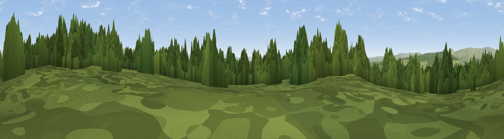

Viewpoint c11585_6956
#26473 in England · top 51% of its area beats it · —The view, rendered

A 360° render of this exact spot computed from the terrain model, tree cover and land cover — summer colours, afternoon light, calibrated against photographs of famous viewpoints. Real trees, hedges and buildings will differ in detail.
The panorama
Grey silhouette: terrain skyline in each direction (720 bearings, Earth curvature and refraction included). Dashed green: skyline with trees (+15 m) and buildings (+8 m) as obstacles. Blue strip: how far the ground is visible on each bearing.
Where the view opens
Wedge length = distance to the farthest visible ground on that bearing (vegetation-aware). Rings at 10, 25 and 50 km.
What fills the view
51% woodland · 48% grassland · 1% cropland
Angular shares of the visible panorama (visual magnitude), not map area. Landscape diversity 0.34 (0–1 Shannon).
Key numbers
More beautiful places nearby
The staircase of upgrades: each row has a higher view potential than everything closer. Driving times are estimates from straight-line distance, calibrated against real road routing — check an actual route before setting out.
| Place | Direction | Drive | Score |
|---|---|---|---|
| Viewpoint c11570_6936 | SW · 1 km | ~4 min | 70.0 |
| Viewpoint c11644_7156 | ENE · 10 km | ~20 min | 80.8 |
| Viewpoint c11995_7247 | NE · 25 km | ~41 min | 82.1 |
| Viewpoint near Bassenthwaite | SSW · 54 km | ~76 min | 82.8 |
| Skiddaw South Top | SSW · 55 km | ~77 min | 85.8 |
| Ullock Pike | SSW · 56 km | ~77 min | 89.4 |
| Long Side | SSW · 56 km | ~78 min | 89.5 |
| Viewpoint near Finsthwaite | S · 91 km | ~115 min | 90.3 |
55.10513, -2.81930 · source: screening · position refined by local search. Computed location — check access rights before visiting.